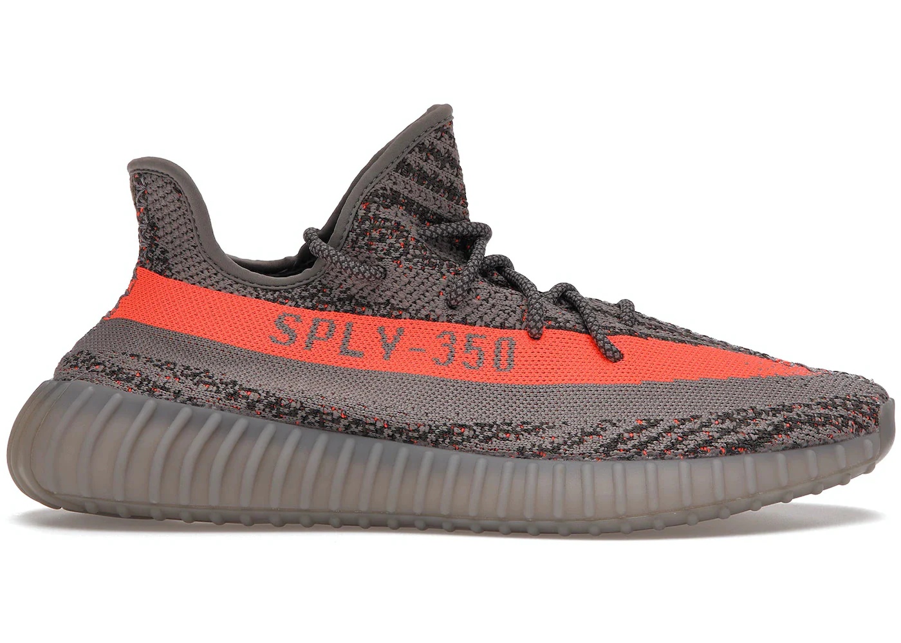
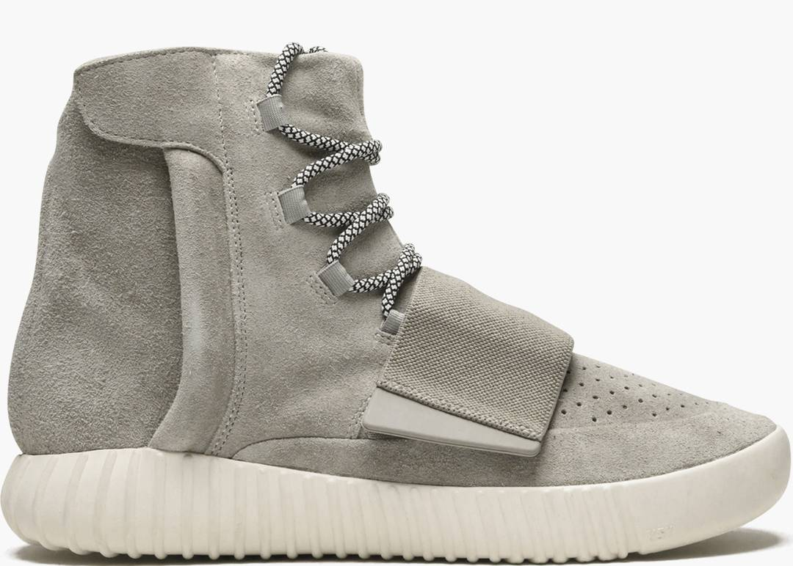
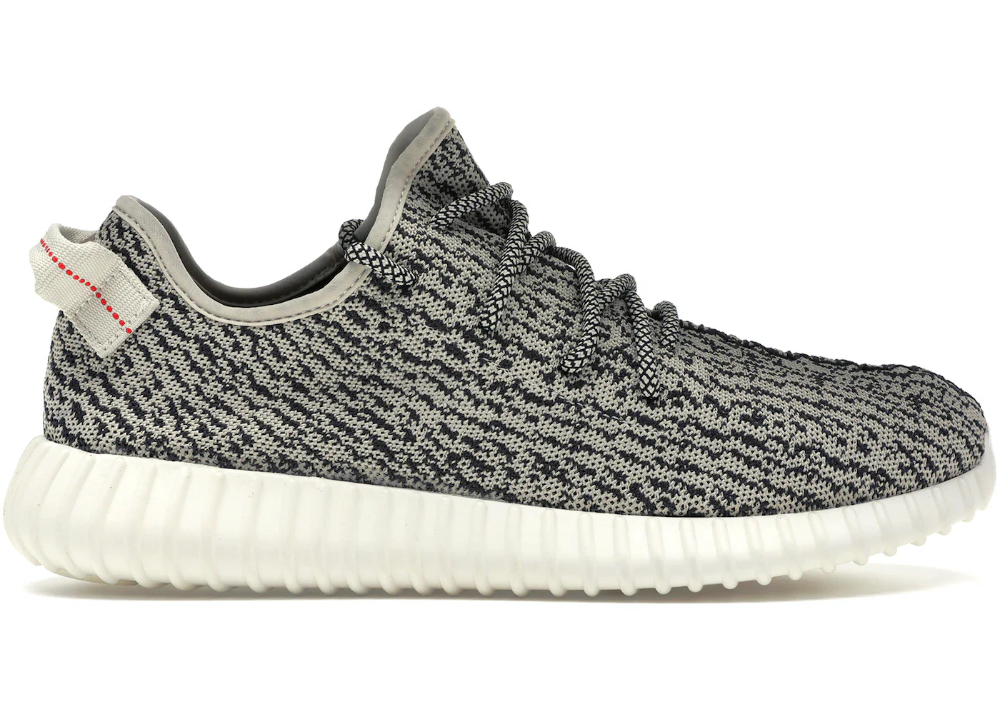
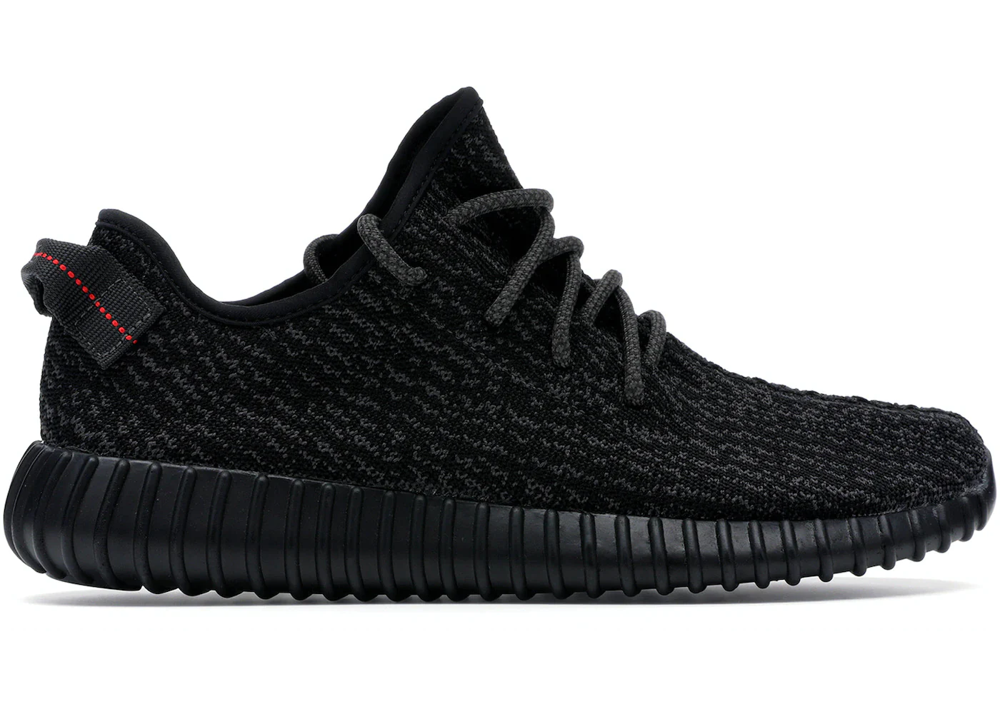
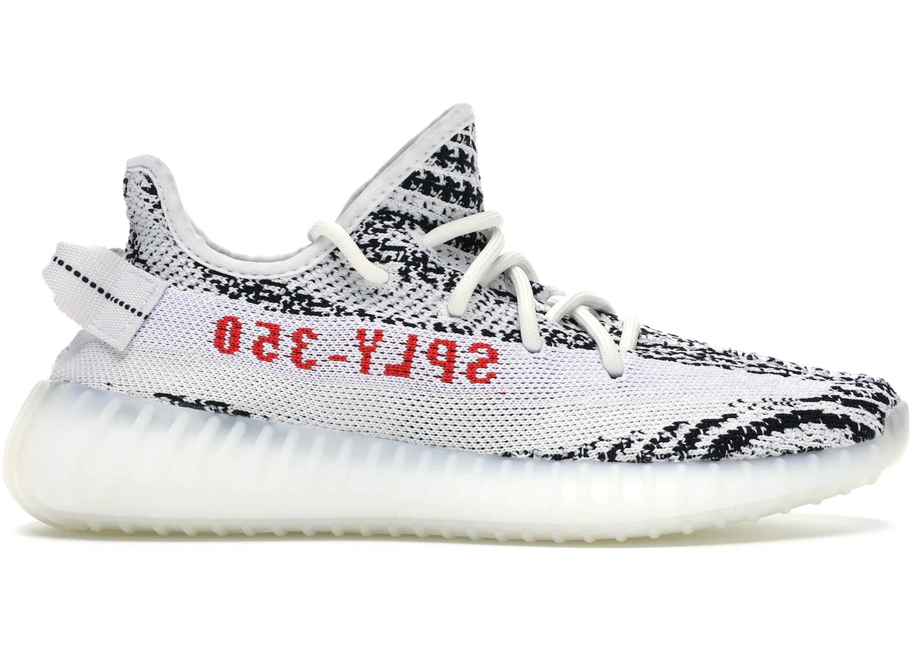
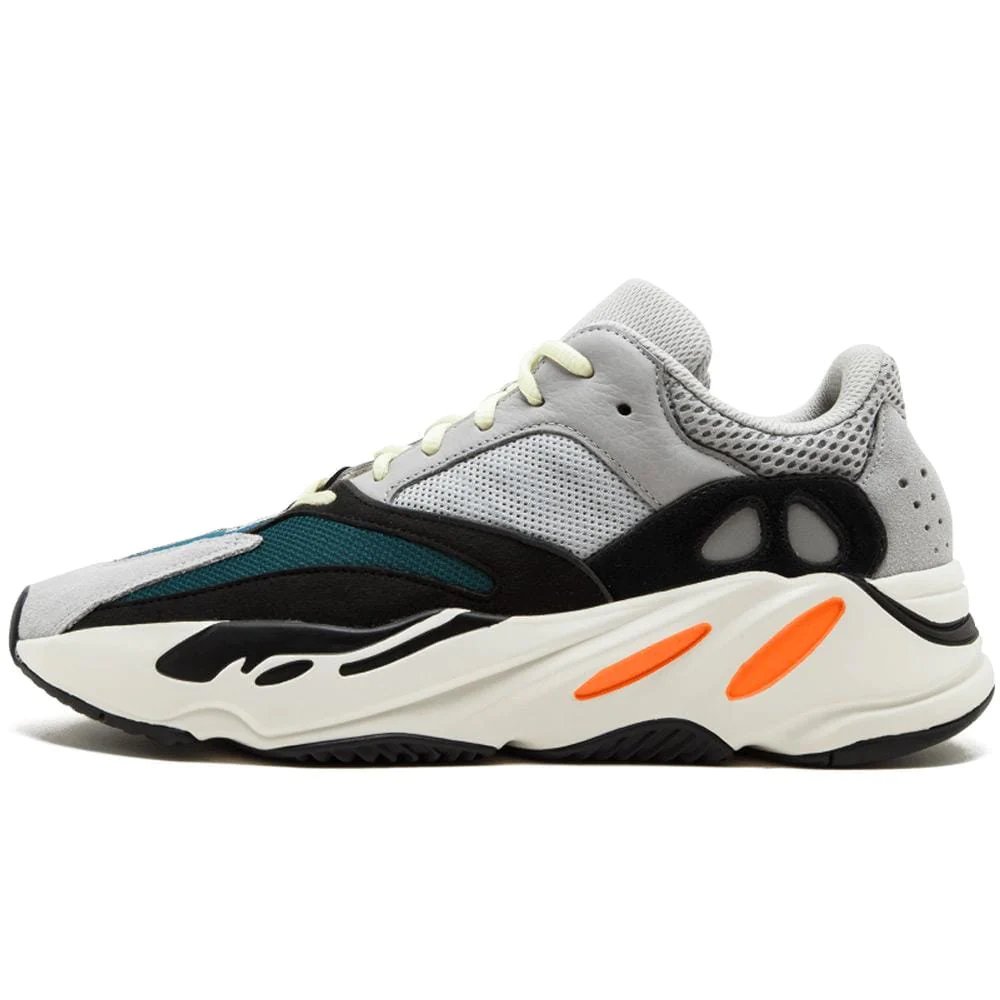
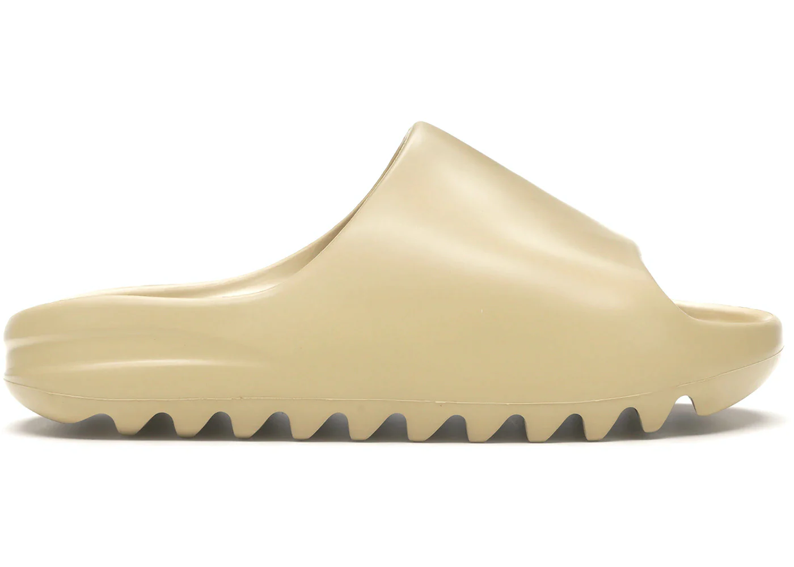
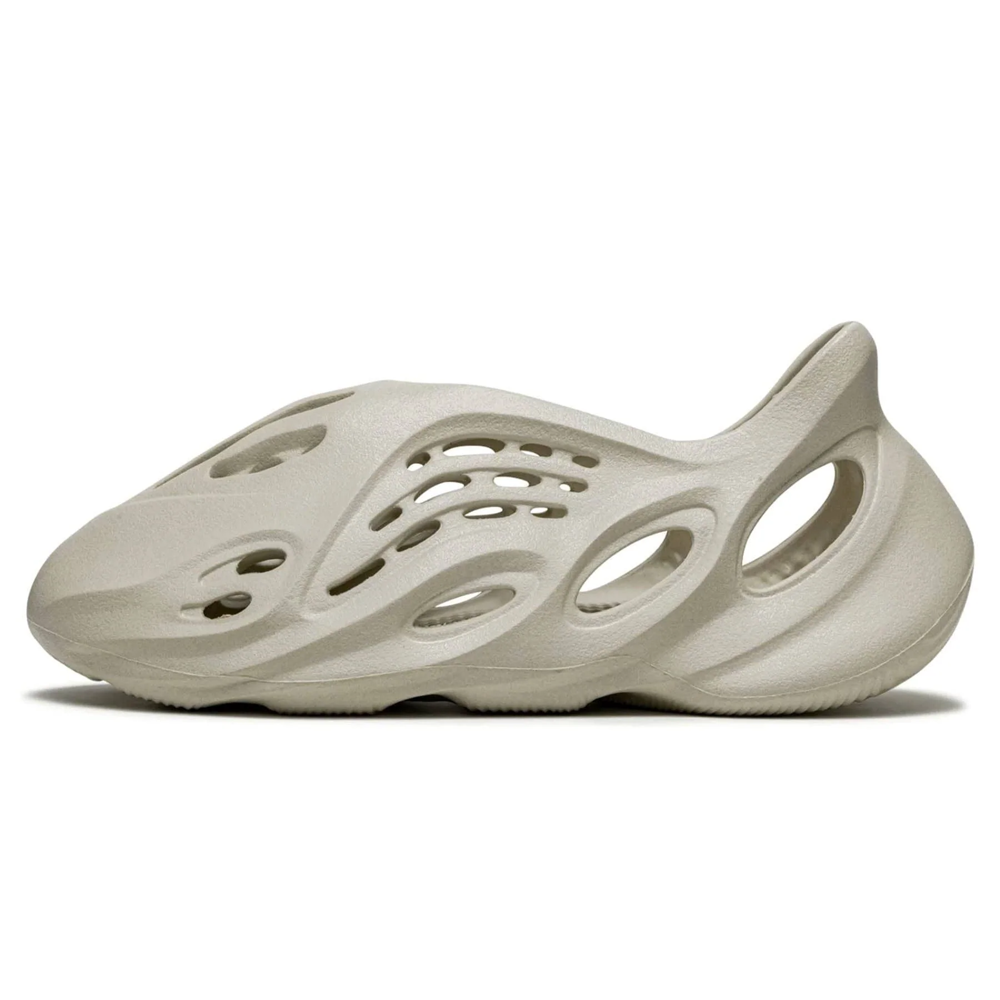

Story and History
The Adidas Yeezy collaboration between Adidas and Kanye West began in 2015, marking a significant moment in the
intersection of fashion, music, and sportswear. Kanye West's vision was to create a sneaker that blends
high-end fashion aesthetics with athletic functionality.
The Yeezy line has seen the release of various models, each contributing to the sneaker's evolution. From the
Yeezy Boost 350 to the Yeezy 700, the designs showcase innovation in materials, technology, and style.
Limited releases and exclusive drops have added an air of exclusivity to the Yeezy brand.
Adidas YEEZY BOOST 350 V2 “Beluga”

Colorways
Adidas Yeezy is known for its minimalist and avant-garde colorways. The neutral tones and earthy hues dominate many
releases, emphasizing the sleek and modern design. Limited-edition colorways often sell out quickly, creating a
sense of anticipation and hype around each drop.
Collaborations with designers and artists have resulted in unique and eye-catching color schemes, making
Yeezys highly sought after by sneaker enthusiasts and fashion-forward individuals alike.







Cultural Impact
The Adidas Yeezy line has had a profound impact on sneaker culture and fashion at large. Kanye West's influence
has elevated the Yeezy brand beyond just footwear, turning it into a symbol of luxury and exclusivity.
The Yeezy Boost series has become a status symbol, worn by celebrities, athletes, and fashion icons. Its influence
extends into streetwear, music, and lifestyle, shaping trends and setting new standards for sneaker collaborations.